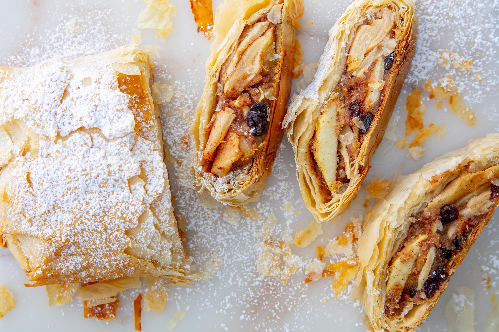

Apple Strudel is much easier to make from scratch than you think! With its flaky crust and a spiced apple filling, this traditional Apfelstrudel recipe is sure to wow your guests. Serve it with vanilla ice cream or vanilla sauce and you have the most delicious fall and winter dessert that everyone will love!
Stand Mixer: My most used kitchen appliance and it’s so pretty it can sit on the counter as decoration!
Cinnamon: I go through so much cinnamon this time of the year so I bought this one to always have it on hand!
Apple Peeler: It cores, peels, and slices. Not only does it save tons of time, but it’s MUCH safer than using a paring knife to peel apples or potatoes.